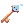
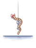
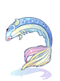
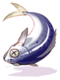
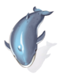
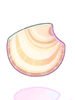
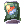

Fishing Tournament
What will your catch be?
Tired from all the running around on festival grounds? During the last 15 minutes of every second Summer Festival, you can come to the dock to try your hand at the Fishing Tournament!
All you need to participate is a rod, a reel and some bait that you can purchase in advance.
So get your inner angler's heart pounding by competing with your friends to see who can reel in the most fish in time.
But watch out, not all fish will go down without a fight!
| 1st Place Fishing Tournament Prize | |||
|---|---|---|---|
| Image | Name | Type | Description |
| Golden Fish |
Costume Upper Headgear | A golden fish head that sits on your head. | |

|
3 Pouring Keys  |
Misc | A waterproof key. The decoration on it looks vaguely familiar...
Used to open Treasure Chests inside the King's Grotto. |

|
150 Summer Festival Coins
|
Misc | A coin used in the Summer Festival |
| 2nd Place Fishing Tournament Prize | |||
|---|---|---|---|
| Image | Name | Type | Description |
|
|
2 Pouring Keys |
Misc | A waterproof key. The decoration on it looks vaguely familiar...
Used to open Treasure Chests inside the King's Grotto. |
|
|
100 Summer Festival Coins
|
Misc | A coin used in the Summer Festival |
| 3rd Place Fishing Tournament Prize | |||
|---|---|---|---|
| Image | Name | Type | Description |
|
|
1 Pouring Keys |
Misc | A waterproof key. The decoration on it looks vaguely familiar...
Used to open Treasure Chests inside the King's Grotto. |
|
|
75 Summer Festival Coins
|
Misc | A coin used in the Summer Festival |
Obtaining A Fishing Rod, Reel, and Bait
Speak to the Cat Fisherman located on the Summer Festival Fishing Pier @navi summer02 92 240
He will offer to sell you a Wooden Fishing Rod for 1 Festival Coin.
He will also sell you a Fishing Reel for 1 Festival Coin.
Lastly you can purchase a variety of Bait from the Cat Fisherman
If this is your first time visiting the Festival, you can ask the Fisherman about Fishing and he will reward you with some free fishing supplies to get you started.
Similar to Digging you'll want to quickly use any extra materials you fish up to upgrade your Fishing Rod.
Upgrading Your Fishing Rod and Bait
Once you've done a little bit of fishing you'll find that you've gathered some excess material.
You can bring that material to the Cat Fisherman and he can upgrade your rod.
Types of Bait
Using better, more expensive lures will not only increase the odds of getting a bite, but will also make fish bite much quicker.
| Types of Baits | |||
|---|---|---|---|
| Image | Name | Price | Description |
| Cheap Lure |
1 Summer Festival Coin
|
A piece of wood. Some fish might actually bite through
Equip this lure by double clicking it. | |
|  | Worm Lure |
2 Summer Festival Coins
|
The standard when it comes to fishing.
Equip this lure by double clicking it. |
| Standard Lure |
4 Summer Festival Coins
|
An effective lure, most fish find it extremely alluring.
Equip this lure by double clicking it. | |
| Rainbow Lure |
7 Summer Festival Coins
|
A mythical creature. None can resist its charms.
Equip this lure by double clicking it. | |
Types of Fishing Rods
Higher level rods break less often, give you a longer time to reel fish in, and open up the possibility of catching rarer fish.
| Types of Fishing Rods | |||
|---|---|---|---|
| Image | Name | Cost | Description |
| Wooden Rod |
1 Summer Festival Coin
|
A cheap fishing rod for beginners. A humble start for all challengers.
Moderate chance of breaking | |
Iron Rod
|
1 Wooden Rod 5 Shiny Clamshells 10 Summer Festival Coins
|
The standard fishing rod. The hopes and dreams of many fishermen lie within this simple rod.
Medium chance of breaking | |
| Steel Rod |
1 Iron Rod 5 Sturdy Turtle Shells 10 Summer Festival Coins
|
A durable yet expensive fishing rod. For the fishing enthusiast.
Low chance of breaking | |
| Golded Rod |
1 Steel Rod 5 Cool Conchs 10 Summer Festival Coins
|
A rod worthy only of the best experts. Its golden glint can be seen at a distance.
Very Low chance of breaking | |
Fish List
| Fishies | ||||
|---|---|---|---|---|
| Image | Name | Point Value | Coin Value | Description |
|
|
Pouring Key |
1 | 0 | A waterproof key. The decoration on it looks vaguely familiar...
Used to open Treasure Chests inside the King's Grotto. |
| Rotten Fish |
1 | 4 | A rotting, dirty fish that attracts flies.
Sell it to the Cat on the Dock for Summer Festival Coins | |
|  | Minnow |
2 | 6 | A fish that can bite inside your mouth. It smells bad, but a special process won't let it rot.
Sell it to the Cat on the Dock for Summer Festival Coins |
Bonito
|
2 | 6 | Used in a variety of the finest fish dishes. Eating often is difficult because of high prices.
Sell it to the Cat on the Dock for Summer Festival Coins | |
| Trout |
3 | 8 | A fish commonly known as Trout. But, it looks a bit different from what you saw in a book.
Sell it to the Cat on the Dock for Summer Festival Coins | |
| Salmon |
2 | 8 | Salmon have the instinct to go back to where you were born.
Sell it to the Cat on the Dock for Summer Festival Coins | |
|  | Flying Fish |
2 | 8 | A fish that can make powerful, self-propelled leaps out of water into air, where their long, wing-like fins enable gliding flight for considerable distances above the water's surface.
Sell it to the Cat on the Dock for Summer Festival Coins |
Marlin
|
3 | 9 | It has an elongated body, a spear-like snout or bill, and a long, rigid dorsal fin which extends forward to form a crest.
Sell it to the Cat on the Dock for Summer Festival Coins | |
| Sturgeon |
3 | 10 | Predator of the Sea, Sturgeon, among fishes, is famous for its viciousness.
Sell it to the Cat on the Dock for Summer Festival Coins | |
Shark
|
4 | 12 | Predators of the sea, their name alone fills people with horror. They are very hard to catch and extremely dangerous, but make for a great gourmet meal.
Sell it to the Cat on the Dock for Summer Festival Coins | |
|  | Whale |
5 | 15 | These enormous animals eat about 4 tons of tiny krill each day, obtained by filter feeding through baleen.
Sell it to the Cat on the Dock for Summer Festival Coins |
| Blue Whale |
7 | 20 | The largest mammal known to exist. These magnificent creatures rule the oceans at up to 100 feet long and upwards of 200 tons
Sell it to the Cat on the Dock for Summer Festival Coins | |
|  | Shiny Clamshell |
0 | 0 | A dazzling shell which could fetch a pretty price.
Loved by cats and fishermen alike. |
| Sturdy Turtle Shell |
0 | 0 | A solid shell which could take quite a beating.
Loved by cats and fishermen alike. | |
| Cool Conch |
0 | 0 | So cool! I bet you could hear a sweet tune if you put your ear against it.
Loved by cats and fishermen alike. | |

|
Crushed Can  |
0 | 0 | A misshapen can with some traces of content still within.
Can be taken to the Festival King for recycling. |
| Fish Head Hat |
2 | 0 | A gaping fish head fashioned into a hat.
Adds a low chance of automatically casting Lv.1 Endow Tsunami with each physical attack. | |

|
Starfish Headband
|
2 | 0 | A hair band that looks like a starfish. |
| Fish Pin |
2 | 0 | A fish-shaped pin. It's pretty but doesn't seem very powerful.
Decreases damage from fish-type monsters by 1%. | |
Golden Fish in Mouth
|
? | 0 | Energy from the sea spreads throughout your body.
The tremendous energy makes me feel much better. | |
See Also
| Summer Festival | ||
|---|---|---|
| General | Frying Dutchman • King's Grotto • Summer Concert • Hooligan • Summer Tablet • Festival Hat Recolors • Summer Shops | |
| Games | Multiplayer Games • Singleplayer Games • Arcade Games • Frenzy Mode | |
| Activities | Digging • Fishing Tournament • Summer Foraging • Summer Cooking | |